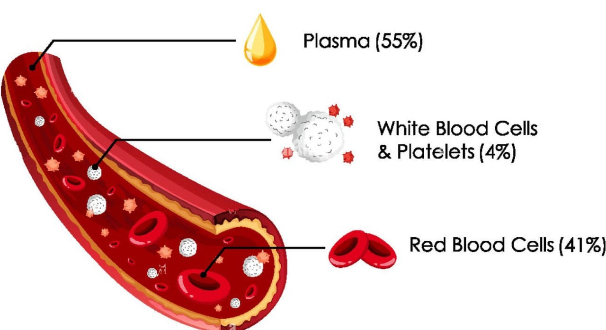
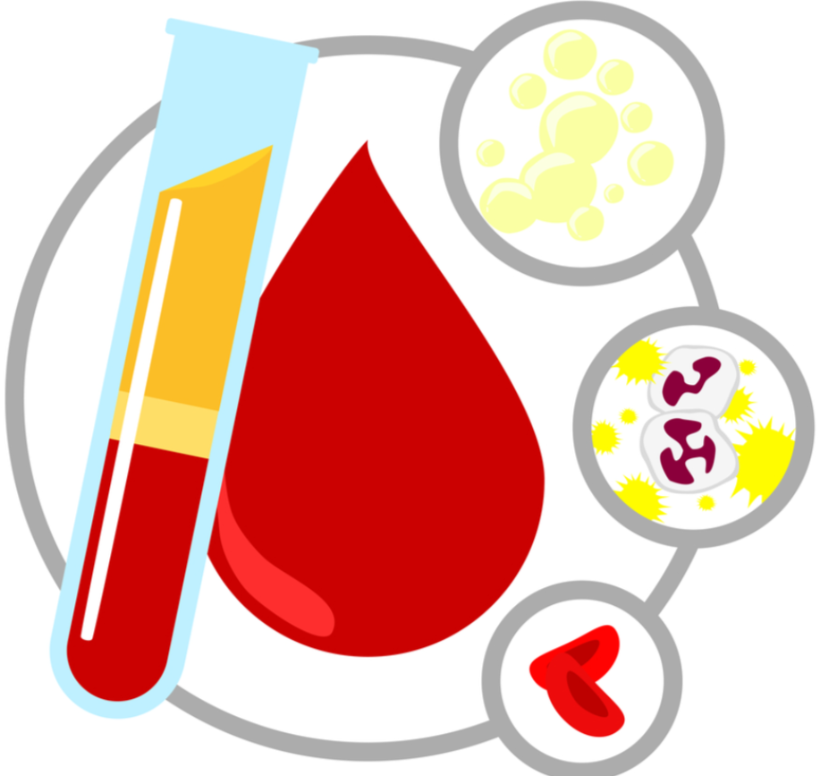
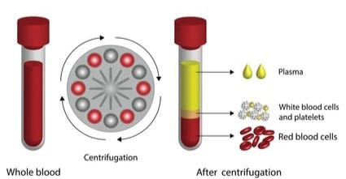

-
Whole Blood Donation
- What It Is: Donors give approximately one pint of blood, which includes red blood cells, white blood cells, platelets, and plasma.
- Use:Typically used for trauma patients, surgeries, or general blood transfusion needs.
- Donation Frequency: Every 56 days (8 weeks).
-
Blood Platelets:
- What It Is: Platelets are separated from your blood and the rest is returned to your body.
- Use: For cancer patients, organ transplant recipients, and others with low platelet counts.
- Donation Frequency:Every 7 days, up to 24 times a year.
-
Double Red Cells:
- What It Is: Red blood cells are extracted, and plasma and platelets are returned to the donor.
- Use: Beneficial for patients with anemia or undergoing surgery.
- Donation Frequency:Every 112 days (16 weeks)
-
Plasma Donation
- What It Is: Plasma is collected, and the rest of the blood components are returned to the donor.
- Use:Treating patients with clotting disorders, burns, or other critical illnesses.
- Donation Frequency: Every 28 days (upto 13 times a year.)


